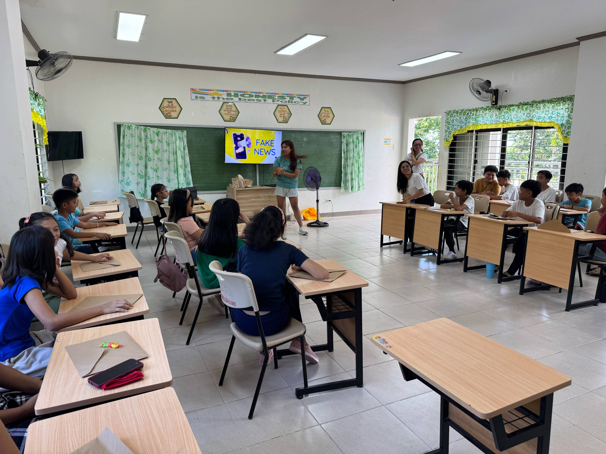
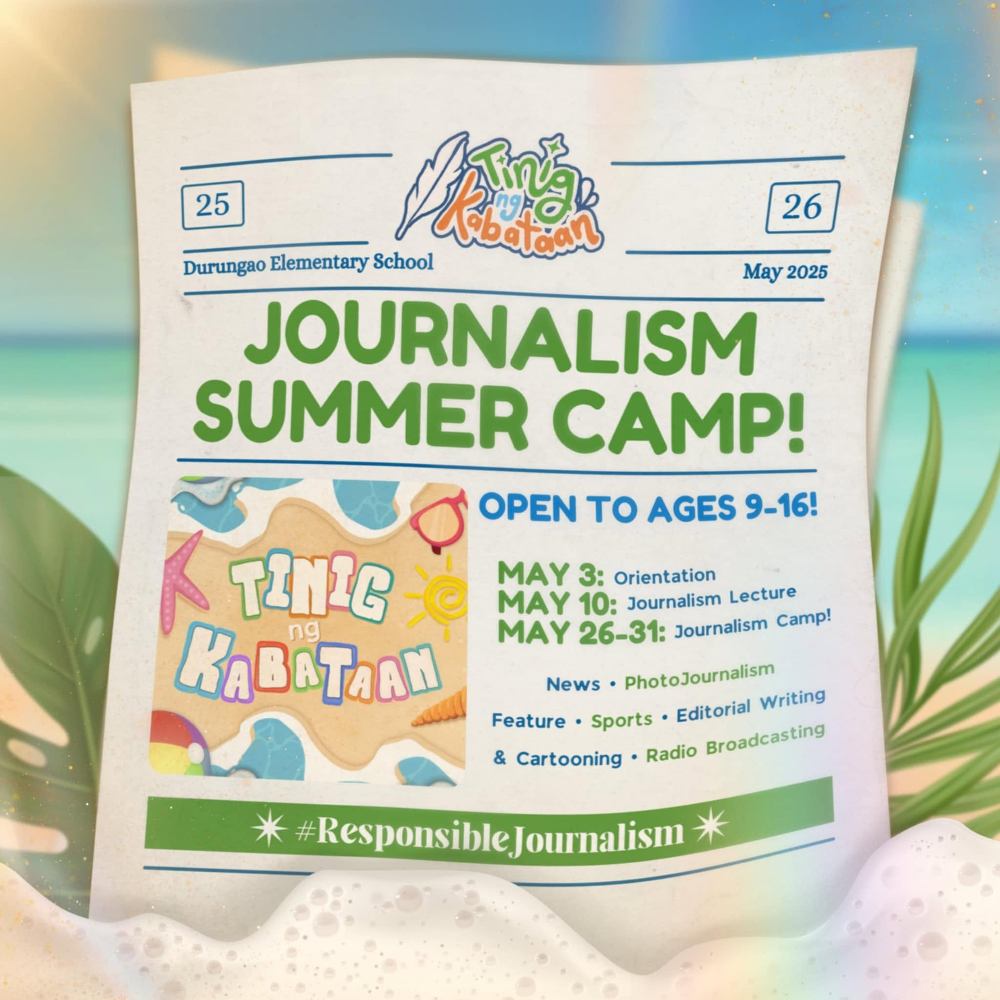
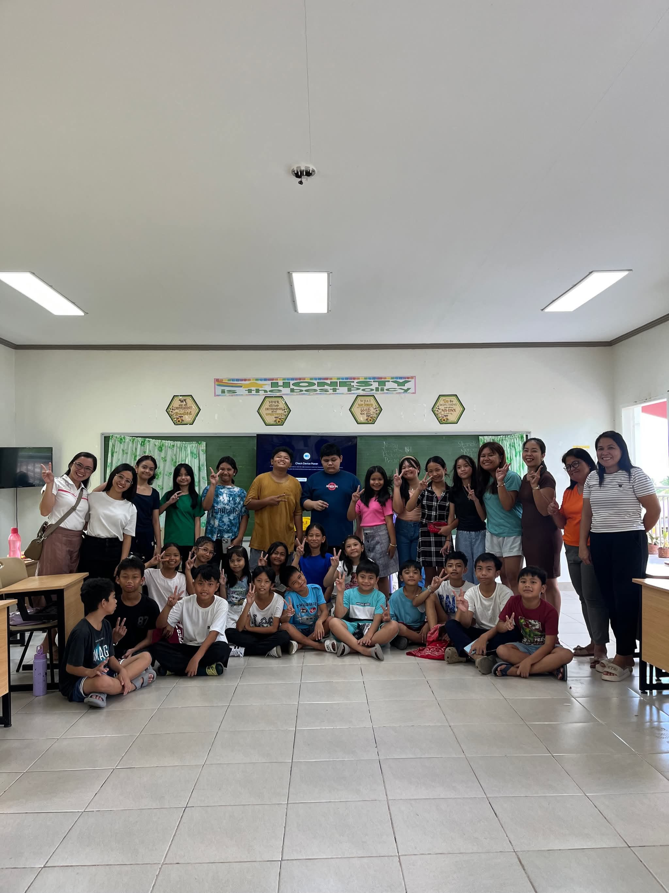
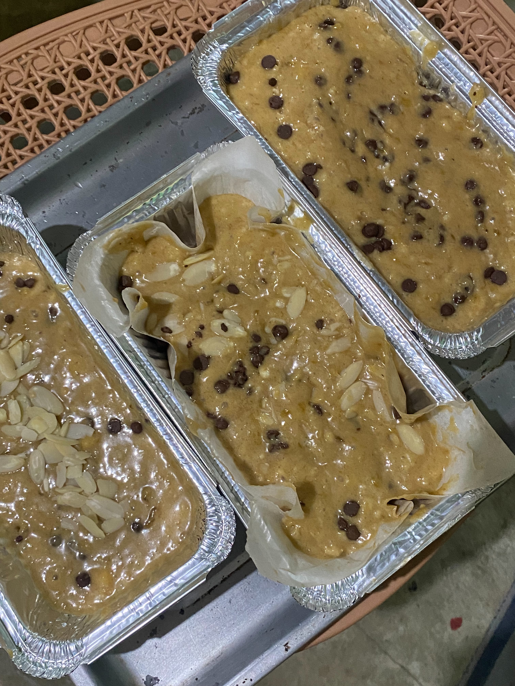
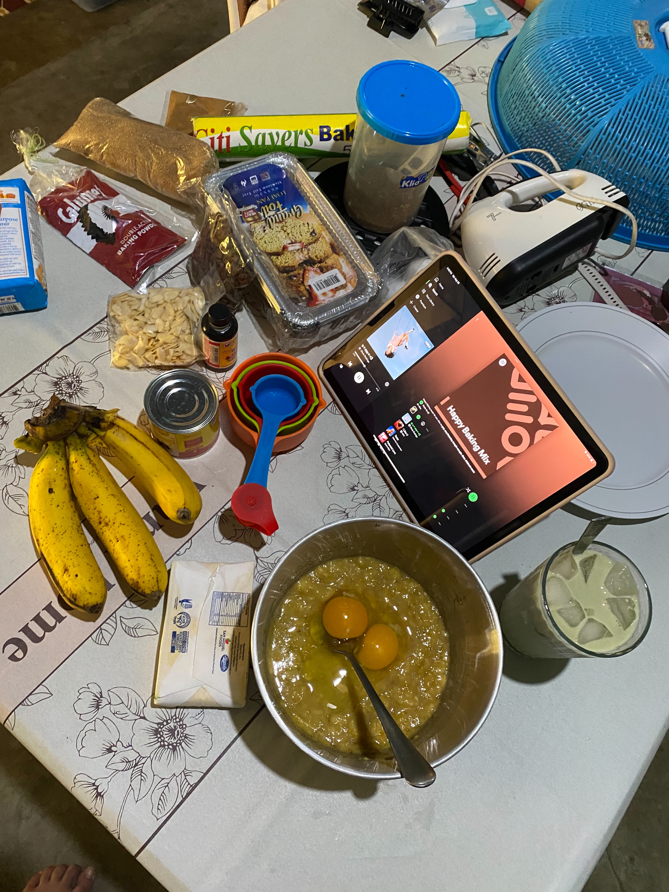
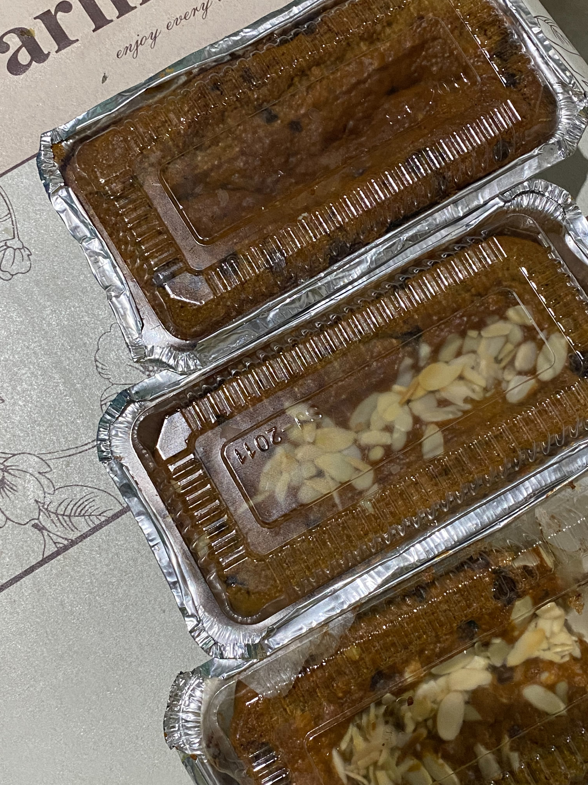

Get to know me!
Hey there! I'm Andreia Guillen B. Ventura, but you can call me Dreia or Ei for short (yes, like the letter A!).
I'm a BA Multimedia Studies Junior, who dreams of becoming a Multimedia Reporter or Journalist. ^__^
What I love the most
Passion Projects!
- I have always been passionate about campus journalism and radio broadcasting. When I took MMS 172 (Audio in Multimedia), I produced a music radio show called, "The Daily Pop". Listen here!
- If you know me, you know how much I love kids! With that, one of the passion projects that I take pride in, is the Campus Journalism camp I organize for Elementary students back in my hometown.



- Baking has always been an avenue of rest for me. More than a passion project, baking has become my love language. I love exploring different desserts and flavors!


